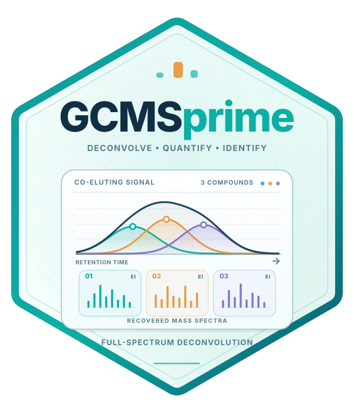

Benchmarks against other software
Source:vignettes/articles/benchmarks.Rmd
benchmarks.RmdSixteen full simulated chromatograms
The same 16 simulated chromatograms were supplied to every program. Each contains 10,000 scans × 550 nominal mass channels (m/z 30–579), covering approximately 50 minutes. Together they contain 88 million simulated ion intensities. Each of the 1,000 distinct compounds occurs in eight randomly chosen samples. The design therefore contains 8,000 positive sample–compound pairs. Rank here counts the distinct generating compounds across the batch, each with a time-local elution profile in each positive sample. Of the compounds, 990 have exponentially modified Gaussian (EMG) peaks and ten have a rising shark-fin profile with an abrupt trailing edge. Higher concentrations broaden both types. The acquisition clock allows a smooth retention shift of up to 2.93 seconds between the first and last injections and approximately 2% variation in scan spacing.
GCMSprime, using simultaneous logconNMF, recovered the true rank of 1,000 exactly in 35.95 seconds per sample. It recovered 8,000 of 8,000 compound occurrences and made no false-positive calls. The recovered peaks included 80 of the 80 acid occurrences. MSHub returned 1,414 deconvolved components, 41.4% above the true rank. The other five workflows produce peak lists or aligned feature groups. Their outputs do not define a common factorisation rank.
| Workflow | Seconds/sample | Estimated rank (true 1,000) | TP (sensitivity) | FP | FN | Acid TP / 80 |
|---|---|---|---|---|---|---|
| GCMSprime | 35.95 | 1,000 (exact) | 8,000 (100%) | 0 | 0 | 80 / 80 |
| MS-DIAL | 16.02 | — | 7,728 (96.6%) | 11,685 | 272 | 73 / 80 |
| mzmine GC-EI | 6.92 | — | 4,202 (52.5%) | 185 | 3,798 | 29 / 80 |
| eRah | 25.94 | — | 7,172 (89.7%) | 5,615 | 828 | 70 / 80 |
| AMDIS | 28.99 | — | 7,878 (98.5%) | 9,122 | 122 | 80 / 80 |
| xcms + CAMERA | 4.22 | — | 7,261 (90.8%) | 890 | 739 | 31 / 80 |
| MSHub | 15.05 | 1,414 | 7,179 (89.7%) | 12,184 | 821 | 50 / 80 |
The native GCMSprime factor IDs mapped one-to-one to the 1,000 generating compounds across all eight positive samples per compound. For MSHub, the correctly matched sample occurrences belonged to 1,072 of its 1,414 native components. Occurrence-to-factor assignments.
Each program ran once, in sequence, on the same 64 GB Windows laptop with eight physical cores and 16 logical processors. Seconds per sample means wall time divided by 16 for the whole batch. The comparison includes any required input conversion or staging and the program’s native analysis. GCMSprime’s time includes reading and fitting an independent PSF standard, the coupled fit and native results export. Simulation, common-format result extraction and accuracy scoring are outside the timed comparison. One run per program gives a descriptive timing for these files and this machine.

Timing boundaries
| Workflow | Native analysis (s/sample) | Input conversion or staging (s/sample) | Through result extraction (s/sample) |
|---|---|---|---|
| GCMSprime | 35.95 | — | 36.40 |
| MS-DIAL | 12.26 | 3.76 | 17.40 |
| mzmine GC-EI | 3.51 | 3.41 | 6.93 |
| eRah | 25.94 | — | 26.46 |
| AMDIS | 25.75 | 3.24 | 29.57 |
| xcms + CAMERA | 4.22 | — | 4.99 |
| MSHub | 14.99 | 0.06 | 15.38 |
The headline time adds native analysis and separately timed input conversion or staging. A dash means the workflow read its inputs directly. The last column also includes extracting peak tables and spectra into the common in-memory representation, before saving that record or comparing it with truth.
Simulation and scoring
Individual chromatograms contain 479–517 true peaks. The L0glm library supplies spectra on m/z 41–298. The selected spectra have compound signal in 245 of the 550 recorded channels. A smoothly varying background fitted to the measured gcmsData2 window supplies the background on m/z 41–298. The additional channels carry low background. Counts have quasi-Poisson variance proportional to the mean, with dispersion 783.18 estimated from gcmsData2. Measured on the recorded scan grids, the median within-compound Spearman correlation between area and half-height width was 0.86 for EMGs and 0.94 for acids. The nominal compound centres follow a regular grid with one deliberately close pair. Concentration-dependent broadening and the subset present in each injection determine the actual overlap. The retention-index (RI) scale is synthetic and time-calibrated for each injection. Reference spectra, occurrence labels and true rank are used in scoring.
GCMSprime calibrated the time-varying PSF on a separately generated
20-peak standard. It used a 16-thread budget with up to eight
simultaneous sample initialisations, 32 pooled mass-channel groups and
the final local rank search
(batch = list(workers = 8L, coupling = list(penalty_search = TRUE))).
The search compares changes to the original-ion GIC. It receives neither
the expected number of compounds nor their spectra. The other programs
used their local GC–EI workflows. The settings and software versions
accompany the results.
eRah used a minimum peak width of 2 seconds. The xcms matched filter
used a 2.6-second FWHM and a signal-to-noise threshold of 1.5. CAMERA
grouped peaks by FWHM with perfwhm = 0.8 and required four
ions. AMDIS used PEAKWIDTH = 16, SENSIT = 60,
RESOLUTION = 0 and PEAKSHAPE = 0. MSHub used
its standalone deconvolution workflow. The simulation and CDF writer ran
with logconNMF and GCMSprime 0.1.0.9012. Their generating functions,
reference spectra and empirical background were checked against the
versions used for fitting (0.1.0.9013).
Each recovered spectrum competes against all 1,000 references, including compounds absent from that sample. A true positive requires a reciprocal best match with spectral cosine ≥0.70, within ±30 simulated RI units, to a compound present in that sample. The score allows one credit per sample and reference. Extra calls, including duplicates, count as false positives. Sensitivity uses all 8,000 occurrences as its denominator. Acid recovery uses all 80.
Quantification and spectral recovery
| Workflow | Area adjusted R² | Median spectral cosine | Mean ion-support F1 | Median profile cosine |
|---|---|---|---|---|
| GCMSprime | 0.999982 | 0.9999995 | 0.995 | 0.999994 |
| MS-DIAL | 0.700129 | 0.9925397 | 0.901 | 0.996864 |
| mzmine GC-EI | 0.966560 | 0.9975148 | 0.874 | — |
| eRah | 0.853212 | 0.9957392 | 0.794 | 0.001678 |
| AMDIS | 0.499773 | 0.9972175 | 0.894 | 0.970942 |
| xcms + CAMERA | 0.951953 | 0.9807221 | 0.604 | 0.971638 |
| MSHub | 0.305059 | 0.9857457 | 0.913 | — |
Among GCMSprime’s 8,000 matched occurrences, the median absolute relative area error was 0.095% and ordinary adjusted R² on the log₁₀ scale was 0.999982. The area panels use ordinary least-squares regression with pointwise 95% prediction intervals. Square axes span 7.5 to 10.5 on both log₁₀ scales. The fits include every positive matched pair, including observations outside the displayed limits. The dashed diagonal marks exact area recovery.

Areas use each program’s exported ion intensities and its acquisition clock to convert to integrated total-ion equivalents. Accuracy is conditional on a correct match. The first table gives the missed and extra calls alongside it.


The first distribution includes all reciprocal library hits. Crosses identify hits to references absent from the sample. All cosines use their measured values on the logit scale. Of the 8,000 GCMSprime spectra, 5,656 scored above 0.999999 and the maximum was 0.9999999913. Exact ion-support matches occupy a separate position at 1, with the violin showing the remaining observations. Ion-support F1 compares the nonzero ions at or above 0.1% of each spectrum’s own base peak and is averaged over correct matches.
Correctness of inferred elution profiles
The examples are the EMG compound and the acid with the greatest total true area in their respective classes. Both were selected from the simulation before comparing any fits. Each occurs in eight samples. Solid curves show inferred profiles, dashed curves show the true profiles, and the eight absent true profiles coincide at zero. Colours order the 16 samples by true area. Heights retain original total-ion intensity per scan. The mean cosine in each example uses all eight positive occurrences, with a missing recovered profile scoring zero. The all-acid tally covers all ten acids.


CAMERA supplies a representative-ion trace scaled to the grouped area. The mzmine and MSHub exports provide spectra and areas without a sample-specific profile in this workflow.
Recovery of all ten shark-fin acids
Each entry counts correctly identified occurrences out of eight for one acid. The downloadable per-compound table also gives the median estimated-to-true area ratio and mean matched profile cosine where a profile is available.
| Acid ID | GCMSprime | MS-DIAL | mzmine | eRah | AMDIS | xcms+CAMERA | MSHub |
|---|---|---|---|---|---|---|---|
| 250 | 8 | 7 | 5 | 5 | 8 | 3 | 8 |
| 311 | 8 | 7 | 3 | 7 | 8 | 6 | 4 |
| 372 | 8 | 8 | 6 | 6 | 8 | 1 | 8 |
| 433 | 8 | 7 | 4 | 8 | 8 | 2 | 8 |
| 494 | 8 | 7 | 4 | 7 | 8 | 3 | 0 |
| 556 | 8 | 7 | 7 | 8 | 8 | 5 | 8 |
| 617 | 8 | 8 | 0 | 8 | 8 | 2 | 6 |
| 678 | 8 | 8 | 0 | 8 | 8 | 7 | 0 |
| 739 | 8 | 7 | 0 | 7 | 8 | 2 | 8 |
| 800 | 8 | 7 | 0 | 6 | 8 | 0 | 0 |
Convergence behaviour
The blind fit converged to a solution very close to the simulated ground truth. It recovered all 1,000 compounds and all 8,000 peak occurrences, with a median elution-profile cosine of 0.999994 and a median absolute relative area error of 0.095%. GIC showed smooth, monotonic descent over eight sweeps. Its final value differed by only 0.19% from that of a fit initialised with the true elution profiles and run for the same eight sweeps.

The figure connects all 29 recorded checkpoints of the blind fit. Multiple updates can occur at the same sweep number when the set of active components changes. The reference fit started with the true unit-area profiles and compound identities. Both fits estimated spectra, areas, profiles and background from the same noisy counts. The reported percentage is the absolute difference in final GIC divided by the magnitude of the reference GIC. This measures agreement with an empirical reference solution.
Reproduce the benchmark
Install the programs and set their local executable paths in the
named list control. The included R recipe generates the
common CDFs and their scoring key, fits the programs sequentially, then
scores the saved fits. Engine
setup and control list.
bench <- system.file("benchmarks", package = "GCMSbenchmark", mustWork = TRUE)
source(file.path(bench, "simulated-16.R"))
directory <- "full-chromatograms"
prepareFullBenchmark(directory)
methods <- c("GCMSprime", "MS-DIAL", "mzmine", "MSHub", "AMDIS", "xcms+CAMERA", "eRah")
for (m in methods) fitFullBenchmark(directory, m, control[[m]], ncores = 16L)
for (m in methods) scoreFullBenchmark(directory, m)
collectFullBenchmark(directory, methods, file.path(directory, "results"))
source(file.path(bench, "plot-simulated-16.R"))
plotBenchmark16(file.path(directory, "results"), file.path(directory, "figures"))CDF checksums · Reference spectra · Occurrence and area matrices · Summary and timing components · Matched peaks · Per-acid recovery · Recovery by abundance quartile · Software versions · Serial run log. The numerical input hashes cover scan times, masses and intensities. The whole-file hashes also include the CDF export timestamp.
Comparison with other software
Of the seven workflows tested, only GCMSprime recovered the true rank of 1,000 and all 8,000 peaks with 100% sensitivity and zero false positives. Rank counts distinct compounds present anywhere in the batch. Sensitivity is the fraction of the 8,000 sample–compound occurrences recovered. Every one of GCMSprime’s 1,000 shared factors matched its generating compound in all eight positive samples. Its peak integration was also the most accurate, with adjusted R² = 0.999982 for estimated versus true log₁₀ areas and 0.095% median absolute relative area error. The next-highest adjusted R² was 0.966560 for mzmine GC-EI, among its 4,202 matched peaks. Quantification results
GNPS/MSHub was the only other tested workflow to return a batch component count. It estimated 1,414 components, a 41.4% overestimate. Of those, 342 had no correctly matched occurrence. At the level of individual samples it made 12,184 false-positive calls and missed 821 true occurrences. The five per-sample workflows produced peak lists or aligned features without estimating a common factorisation rank. Their sensitivity ranged from 52.5% to 98.5%, and each made between 185 and 11,685 false-positive calls. The published settings and reciprocal-match rule apply to all counts below. Benchmark design and scoring · Factor assignments
| Workflow | Which choices affect peak recovery? | Result on the 16 chromatograms |
|---|---|---|
| MS-DIAL | Model peaks are detected within each chromatogram before alignment. Smoothing, peak-detection thresholds and the deconvolution window affect which weak or overlapping components yield spectra. MS-DIAL GC–MS tutorial | 96.6% sensitivity and 11,685 false-positive calls. |
| mzmine GC-EI | Groups previously detected ion peaks by retention time and shape. The grouping tolerances and minimum ion count affect which components reach the peak list. GC-EI module | The fewest false-positive calls among the alternatives (185) and the most missed peaks (3,798). |
| eRah | Filters and resolves each sample before aligning compounds. Minimum peak width and detection thresholds influence which local spectra survive deconvolution. eRah manual | Missed 828 true occurrences and made 5,615 false-positive calls. |
| AMDIS | Representative ion traces supply the model peak shapes. Component width, resolution, sensitivity and shape settings affect splitting in crowded intervals. NIST user guide | Closest to GCMSprime on sensitivity (98.5%), with 122 missed occurrences and 9,122 false-positive calls. |
| xcms + CAMERA | The matched filter detects individual ion peaks with a specified width and signal-to-noise cutoff. CAMERA then groups detected ions into pseudospectra. Peak detection errors can therefore propagate into spectral grouping. CAMERA | Missed 739 occurrences and made 890 false-positive calls. |
| GNPS/MSHub | NMF separates compounds using aligned peak integrals across samples. Integration discards the scan-by-scan shapes that can help distinguish co-eluting compounds. Aksenov et al. · GNPS workflow | Estimated 414 more batch components than the true 1,000. Sample-level sensitivity was 89.7%. |
Matrix and tensor factorisation approaches
GCMSprime uses grouped L₀ regression to select candidate peaks jointly across mass channels. It then scores changes to the shared compound count on the original ion data. Its quasi-Poisson GIC charges for the complexity of each log-concave elution profile and the number of free positive ion proportions in each spectrum. An additional compound or fragment ion must improve the fit enough to justify its cost. This gives an explicit selection rule for spectral sparsity. Mathematical description
| Matrix or tensor method | How rank enters the fit | Limitation for these chromatograms |
|---|---|---|
| MCR-ALS, conventional GC–MS NMF and unimodal NMF | The analyst supplies the component count, often after an exploratory analysis. | Nonnegativity allows multiple maxima within a profile. Unimodality rules those out but still allows irregular shoulders and tails. MCR-ALS · GC–MS NMF · Unimodal NMF |
| Simultaneous NMF | A common factor links datasets at a specified rank. | Sharing spectra helps across samples. The basic factorisation leaves each compound’s elution shape unrestricted and supplies no chromatographic rule to choose between one broad peak and two neighbouring factors. Lee et al. |
| Global parametric GC–MS analysis | Candidate compound models are specified and fitted jointly. | The chosen peak family must describe the peaks in every sample. A good exponentially modified Gaussian model for a regular peak can leave a systematic residual at the sharp trailing edge of a shark-fin acid. Van Stokkum et al. |
| PARAFAC and shifted PARAFAC | Diagnostics such as core consistency compare specified ranks. | Standard trilinearity fixes each compound’s elution shape across samples up to amplitude. Allowing a retention shift moves the peak, while its width and asymmetry remain fixed. The simulated peaks broaden with concentration. Shifted factor models · Core consistency |
| Classical PARAFAC2 and PARADISe | PARADISe compares candidate ranks within retention intervals. A later automated workflow also selects and evaluates models. | PARAFAC2 lets profiles move, but their cross-products after scaling must agree across samples. Differential broadening changes how much neighbouring peaks overlap and can violate that condition. Choosing an interval model also leaves the task of assigning unique compounds across the chromatogram. PARADISe · Automated PARADISe |
| Flexible and fully constrained PARAFAC2 | Both cited formulations fit a specified number of components. | Flexible coupling relaxes the cross-product condition. AO-ADMM can impose sparsity, smoothness or nonnegativity on all modes. The analyst still specifies the rank and relevant regularisation settings in these least-squares fits. Cohen and Bro · Roald et al. |
| Shift-invariant trilinearity and PARAFAC2×N | Both fit a chosen model order. | A shifted copy of a common peak cannot reproduce concentration-dependent broadening. PARAFAC2×N accommodates drift in multiple separation dimensions. Its coupling constraints still leave the number of compounds to be selected. Shift-invariant trilinearity · PARAFAC2×N |
The distinction matters for the simulated ion counts, whose variance rises with their mean. Unweighted least squares treats a residual of a given size equally at all intensities. Poisson MCR and KL-based NMF accommodate signal-dependent noise. GCMSprime also estimates overdispersion, which sets the scale of a deviance improvement relative to the cost of extra ions or compounds. The methods above have useful extensions for noise, sparsity and rank selection. Their cited formulations do not combine grouped peak selection across ions, penalisation of spectral support and per-occurrence log-concavity in a whole-chromatogram rank criterion. Poisson MCR · NMF objectives
Across the 160,000 scans, the median number of simultaneously eluting true peaks was one, the 95th percentile was three and the maximum was five, counting a peak wherever it reached 1% of its own apex. Thus 1,000 measures the number of distinct compounds across the chromatograms. An unrestricted nonnegative factorisation of the stacked scan-by-ion matrix has nonnegative rank at most 550, since the 550 ion columns themselves provide a nonnegative basis.
The largest exact rank recovery we found in a published benchmark of conventional NMF with added noise was 150 factors. Squires, Prügel-Bennett and Niranjan selected that rank on a 1,000 × 2,000 matrix using minimum description length. They also recovered 50, 80 and 120 factors exactly. The 16 full chromatograms here contain 88 million ion measurements, compared with 2 million matrix entries in their rank-150 example. The simultaneous fit recovered 6.7 times as many generating components from 44 times as many observations. Squires et al., Figs. 1–2
Eswar et al. compared rank selectors on simulated matrices with true rank 10, testing candidate ranks from 1 to 20. Under Gaussian noise only cross-validation and singular-value hard thresholding ever recovered the planted rank in their experiment. Cai et al.’s Poisson NMF benchmark rarely extended beyond rank 10, with just one higher rank (30) among the six they tested. Eswar et al. · Cai et al.
Chennupati et al. recovered seven planted factors in a one-terabyte matrix using distributed NMF. Fu et al. tested nonnegative tensor rank selection at true ranks 15–40. Chennupati et al. · Fu et al.
Evidence for automatic rank recovery
An experiment tests exact rank recovery when the generating component count is known to the evaluator, the method selects the count from the observations, and the reported estimate equals the generating count. Verifying the identities of the recovered components is a further test. The distinction matters when several components can explain a similar signal.
| Method | What the experiment established |
|---|---|
| Minimum description length for NMF | On a noisy 1,000 × 2,000 synthetic matrix, the minimum description length selected exactly 150 factors. Across five planted ranks, the method recovered 50, 80, 120 and 150 exactly and slightly missed 25. Squires et al., Figs. 1–2 |
| Automatic relevance determination (ARD-NMF) | Starting with 32 candidate components, the method recovered the 16 limb positions in the swimmer images under Poisson noise. Recovery depended on the prior hyperparameter. Tan and Févotte, §VI-B |
| Separable multinomial factorisation | With 30 planted topics and words specific to each topic, TOP recovered the topic count in 100% of trials in Table 1. A separate experiment used 120 topics and reported factor estimation error and runtime. Bing, Bunea and Wegkamp, Tables 1–2 |
| Bayesian nonnegative tensor factorisation | On simulated count tensors the estimated rank was close to the planted value of 20. The authors also inferred about 120 active components in real event data, where the true count is unknown. Hu et al., §6 |
| Minimum description length for nonnegative tensors | Simulations covered true ranks 15–40. The authors scored how close each estimate was to the truth. Their reported score gives partial credit for a near miss. Fu et al., §5.2 |
| Spectral estimation of tensor rank (FastRank) | The rank estimates were exact on all 300 noiseless three-way tensors with planted ranks up to 50. On 300 noisy tensors, the mean absolute error was 7.08 components. The larger simulations in Table 5 report runtime. Bougiatiotis and Paliouras, Tables 1, 2 and 5 |
We found no earlier published demonstration of a simultaneous chromatographic factorisation that selected 1,000 distinct compounds and verified their identities across all 8,000 occurrences.
Scaling to larger batches
The 16 full chromatograms each contained 10,000 scans and 550 ion channels. The joint analysis took 35.95 seconds per sample on a 64 GB laptop with eight physical cores and 16 logical processors. Its sampled peak working set was 6.8 GiB. Initial PSF regressions ran in parallel across samples. The joint fit restricted profile updates to local retention windows, shared each compound’s spectrum across samples and used OpenMP across samples or ions. Timing components and benchmark results
The current joint count solver stores three dense scan-by-ion arrays per sample for the observations, background and fitted means. It also holds one dense scan-by-compound profile matrix per sample, even when many compounds are absent. For S samples with T scans, M ion channels and K shared components, these four arrays alone occupy 8ST(3M+K) bytes at double precision. Temporary arrays, initial dictionaries and other working storage add to that figure. Profile and ion storage · Joint count updates
| Full chromatograms | Shared compounds | Ion measurements | Four arrays alone |
|---|---|---|---|
| 16 (measured run) | 1,000 | 88 million | 3.2 GiB |
| 100 (projection) | 10,000 | 550 million | 86.8 GiB |
| 1,000 (projection) | 1,000 | 5.5 billion | 197.4 GiB |
| 1,000 (projection) | 10,000 | 5.5 billion | 868.0 GiB |
At the measured throughput, 1,000 samples would take about ten hours if the time per sample held constant. The larger batches have yet to be timed or scored for rank recovery. On this laptop, an overnight run at that scale would require a more memory-efficient joint solver, for example one that stores only active profile windows and streams blocks of ion data. The number of compounds present per sample and how often their peaks overlap also affect the work per sweep.
Commercial GC–MS software
The vendor guides reviewed here do not specify a preset objective for deciding whether a better fit to the original ion counts justifies another compound, a more complex profile or additional fragment ions. Users can set peak width, height, area and signal-to-noise thresholds in AnalyzerPro. In MassHunter, the correlation window affects how many neighbouring peaks are resolved. These choices can change the peak list. The nine commercial workflows reviewed have no published result on these 16 chromatograms against which to compare rank recovery, false calls or area accuracy. AnalyzerPro · MassHunter, p. 27
In an independent GC–TOF-MS experiment, Lu et al. found that component width was the most influential setting for the versions of AnalyzerPro, ChromaTOF and AMDIS they tested. Some modern products use information across injections. LECO ChromaTOF Sync, for example, co-processes sample sets, although its public description leaves the criterion for selecting the batch compound count unspecified. Lu et al. · ChromaTOF Sync
Vendor documentation for the nine workflows reviewed
SpectralWorks AnalyzerPro · Agilent MassHunter Unknowns Analysis · Thermo Scientific TraceFinder
Shimadzu LabSolutions Insight Explore GCMS · Markes / SepSolve ChromSpace 1D · LECO ChromaTOF / ChromaTOF Sync
Wiley KnowItAll GC Expert / MS Expert · MsMetrix GC-Analyzer / GCxGC-Analyzer · ACD/Labs Spectrus (MS Structure ID Suite)